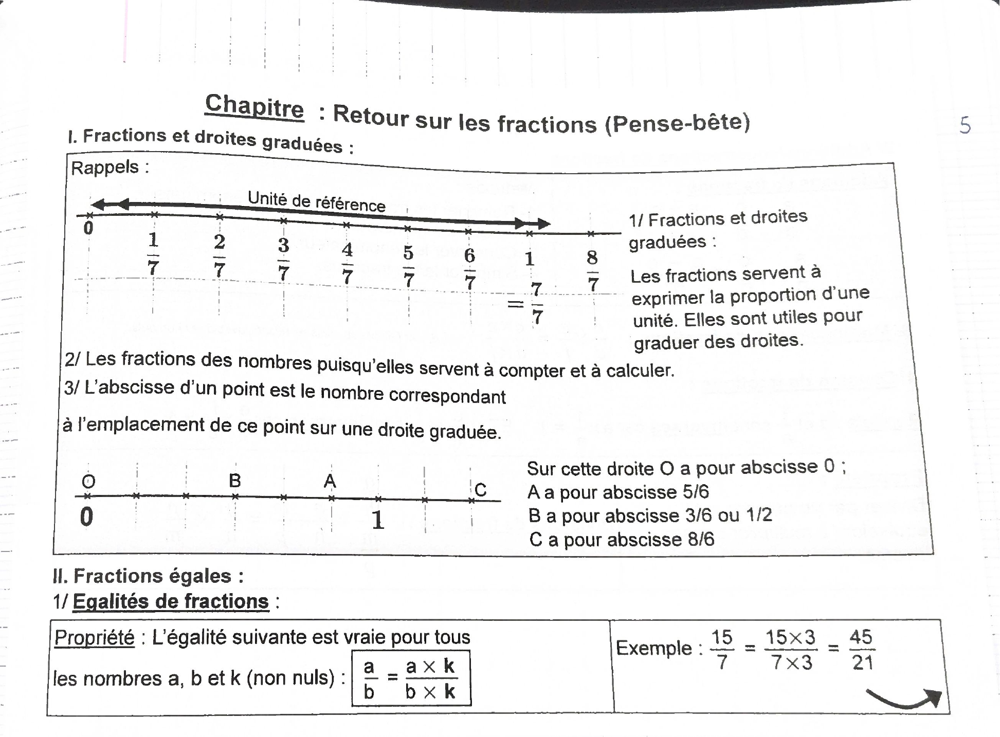
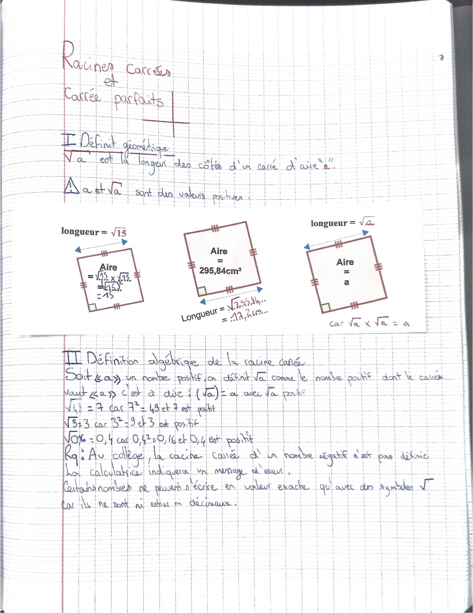
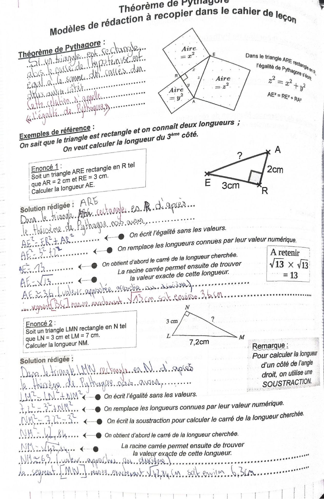
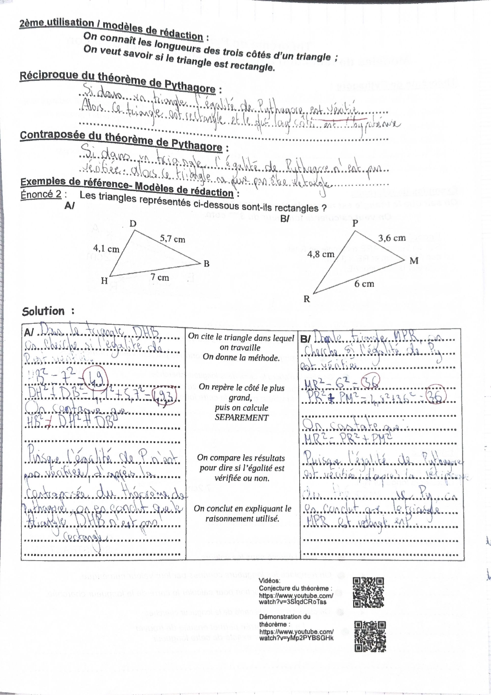
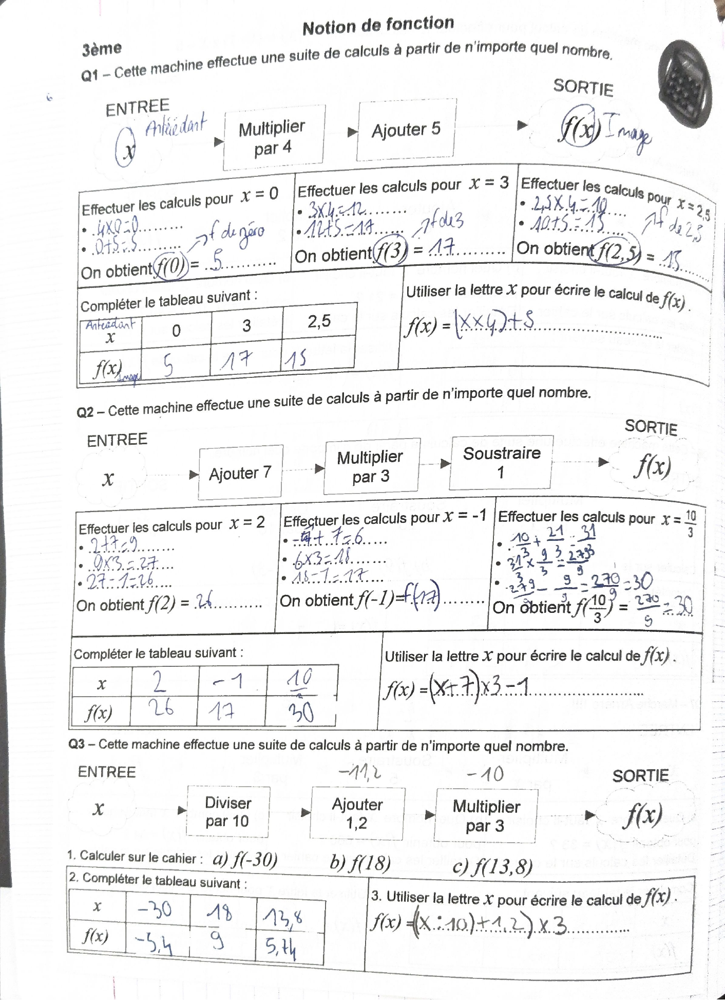
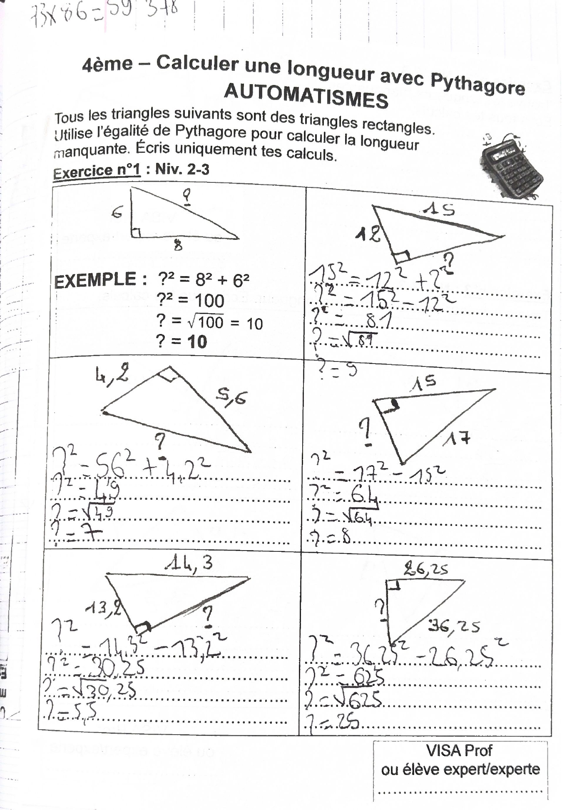

Le début de l’année en deux cahiers : le cahier de leçons (fractions, racines carrées, théorème de Pythagore, unités, fiches de mémorisation)
et le cahier d’exercices (questions du jour, droite numérique, notion de fonction, problèmes, calcul littéral).
La lecture complète suit les pages. La synthèse garde ce qu’il faut savoir. L’extra va plus loin, dans les mêmes notions.
Ce qu’il faut savoir, dans l’ordre du cahier
Une fraction exprime une proportion d’une unité et sert à graduer une droite. L’abscisse d’un point est le nombre qui correspond à sa place sur la droite graduée. Fractions égales : a/b = (a × k)/(b × k), avec b et k non nuls.
√a est la longueur du côté d’un carré d’aire a. C’est le nombre positif dont le carré vaut a : (√a)² = a. Au collège, la racine carrée d’un nombre négatif n’est pas définie.
Pour a strictement positif, l’équation x² = a a deux solutions : √a et −√a (si a = 0, une seule : 0 ; si a < 0, aucune).
Si un triangle est rectangle, alors le carré de l’hypoténuse est égal à la somme des carrés des deux autres côtés. Cette relation s’appelle l’égalité de Pythagore. Il sert à calculer une longueur.
Si, dans un triangle, l’égalité de Pythagore est vérifiée, alors le triangle est rectangle, et le plus grand côté est l’hypoténuse.
Si l’égalité de Pythagore n’est pas vérifiée, le triangle n’est pas rectangle.
1 dm² = 100 cm². 1 dm³ = 1 000 cm³ = 1 L. 1 m³ = 1 000 L. 1 h = 60 min. 1,2 h = 1 h 12 min. 25 m/s = 90 km/h.
Une machine de calcul transforme un nombre x (l’antécédent) en un nombre f(x) (son image). On écrit le calcul avec la lettre x, par exemple f(x) = 4x + 5.
Méthodes à retenir
Calculer une longueur avec Pythagore : nommer le triangle rectangle et l’angle droit, écrire l’égalité avec les lettres, remplacer par les valeurs, calculer le carré, prendre la racine carrée, donner l’unité.
Pour un côté de l’angle droit, on fait une soustraction : hypoténuse² − autre côté².
Savoir si un triangle est rectangle : repérer le plus grand côté, calculer séparément son carré et la somme des carrés des deux autres, comparer, conclure avec la réciproque ou la contraposée.
Additionner des fractions : les ramener au même dénominateur, ajouter les numérateurs, garder le dénominateur, simplifier.
Diviser par un nombre revient à multiplier par son inverse. L’inverse de a/b est b/a.
Marche arrière d’une machine de calcul : partir du résultat et faire les opérations contraires, dans l’ordre inverse.
Cahier de leçons · page 5
Retour sur les fractions (pense-bête)
I. Fractions et droites graduées
Les fractions servent à exprimer la proportion d’une unité. Elles sont utiles pour graduer des droites. Sur la droite du cours, l’unité de référence est partagée en 7 : 1/7, 2/7… jusqu’à 7/7 = 1, puis 8/7.
Les fractions sont des nombres, puisqu’elles servent à compter et à calculer.
L’abscisse d’un point est le nombre correspondant à l’emplacement de ce point sur une droite graduée.
Exemple : O a pour abscisse 0, A a pour abscisse 5/6, B a pour abscisse 3/6 ou 1/2, C a pour abscisse 8/6.
II. Fractions égales
Propriété : pour tous les nombres a, b et k (b et k non nuls), a/b = (a × k)/(b × k).
Exemple : 15/7 = (15 × 3)/(7 × 3) = 45/21.

Pense-bête « Retour sur les fractions ».Cahier de leçons · page 7
Racines carrées et carrés parfaits
I. Définition géométrique
√a est la longueur des côtés d’un carré d’aire a. Attention : a et √a sont des valeurs positives.
Un carré de côté √15 a pour aire √15 × √15 = 15.
Un carré d’aire 295,84 cm² a pour côté √295,84 = 17,2 cm.
Un carré d’aire a a pour côté √a, car √a × √a = a.
II. Définition algébrique
Soit a un nombre positif. On définit √a comme le nombre positif dont le carré vaut a, c’est-à-dire (√a)² = a, avec √a positif.
√49 = 7car 7² = 49 et 7 est positif
√9 = 3car 3² = 9 et 3 est positif
√0,16 = 0,4car 0,4² = 0,16 et 0,4 est positif
Remarque : au collège, la racine carrée d’un nombre négatif n’est pas définie ; la calculatrice indique un message d’erreur. Certains nombres ne peuvent s’écrire en valeur exacte qu’avec le symbole √, car ils ne sont ni décimaux ni même des fractions (√2, √3…).
Le titre du cahier est écrit « Carrée parfaits » : c’est « carrés parfaits ».

La leçon sur les racines carrées.Cahier de leçons · à connaître par cœur
La ligne des carrés
Bande collée dans le cahier, que tu as remplie, sans erreur :
1² = 12² = 4 · 3² = 9
4² = 165² = 25 · 6² = 36
7² = 498² = 64 · 9² = 81
10² = 10011² = 121 · 12² = 144
Cahier de leçons · fiche mémo
Fiche de mémorisation : racines carrées
Ce que tu as rempli sur la fiche des questions :
√16 ; √100 ; √1,96 ; √2500 : tu as écrit 1 (?), 10, 1,4 et 50.
√9 + √16 = 7 et √(9 + 16) = 5.
√144 + √25 = 17 et √(144 + 25) = 13.
Solutions de x² = a : x = √a. Pour x² = 225 : x = √225. Pour x² = 2 : x = √2.
Retouches signalées : √16 vaut 4 ; le chiffre écrit ressemble à un 1, à relire. Pour x² = a, le corrigé donne deux solutions, √a et −√a : tu n’as écrit que la positive.
À compléter : les questions de la fiche restées vides (bon entraînement avant un contrôle)
Définition du carré ; carrés de 1 à 15, de 0,1 à 1,1, de −3, −12 et −1,5 ; définitions ; (√33,7)² ; x² = 0,49 et x² = 14 ; √(10,5² − 8,4²) ; √(16/25) ; √(16 + 9) ; √(1/100). Le corrigé est juste en dessous : cache-le, réponds, puis compare.
Si a > 0, x² = a a deux solutions : x = √a (positive) et x = −√a (négative). x² = 0,49 : 0,7 et −0,7. x² = 225 : 15 et −15. x² = 14 : √14 et −√14. x² = 2 : √2 et −√2.
À retenir : √9 + √16 n’est pas égal à √(9 + 16). On ne peut pas « couper » une racine carrée sur une somme.
Cahier de leçons · Pythagore
Théorème de Pythagore : modèles de rédaction
Le théorème
Si un triangle est rectangle, alors le carré de l’hypoténuse est égal à la somme des carrés des deux autres côtés. Cette relation s’appelle « l’égalité de Pythagore ».
Dans le triangle ARE rectangle en R, l’égalité de Pythagore s’écrit z² = x² + y², soit AE² = RE² + RA². Sur la figure, les trois carrés construits sur les côtés ont pour aires x², y² et z².
1re utilisation : calculer la longueur du 3e côté
On sait que le triangle est rectangle et on connaît deux longueurs.
Énoncé 1. ARE est rectangle en R, AR = 2 cm, RE = 3 cm. Calculer AE.
Dans le triangle ARE rectangle en R, d’après le théorème de Pythagore :
AE² = ER² + AR² (on écrit l’égalité sans les valeurs) ;
AE² = 3² + 2² (on remplace par les valeurs) ;
AE² = 13 (le carré de la longueur cherchée) ;
AE = √13 (la valeur exacte) ; AE ≈ 3,6 cm (valeur approchée au dixième).
À retenir : √13 × √13 = 13.
Énoncé 2. LMN est rectangle en N, LN = 3 cm. Calculer NM.
Dans le triangle LMN rectangle en N, d’après le théorème de Pythagore : LM² = LN² + NM².
7,2² = 3² + NM², donc NM² = 7,2² − 3² = 42,84.
NM = √42,84 cm (valeur exacte), soit environ 6,5 cm.
Remarque du cours : pour calculer la longueur d’un côté de l’angle droit, on utilise une soustraction.
Retouche signalée : l’énoncé imprimé dit LM = 7 cm, mais la figure indique 7,2 cm et tu calcules avec 7,2. Avec 7 cm, on trouverait NM² = 40 et NM ≈ 6,3 cm. À vérifier avec le professeur.
2e utilisation : savoir si un triangle est rectangle
On connaît les longueurs des trois côtés.
Réciproque : si, dans un triangle, l’égalité de Pythagore est vérifiée, alors ce triangle est rectangle et le plus long côté est l’hypoténuse.
Contraposée : si, dans un triangle, l’égalité de Pythagore n’est pas vérifiée, alors ce triangle ne peut pas être rectangle.
Méthode : citer le triangle et la méthode, repérer le plus grand côté, calculer séparément, comparer, conclure en citant le raisonnement.
Triangle DHB (DH = 4,1 cm, DB = 5,7 cm, HB = 7 cm). HB² = 7² = 49. DH² + DB² = 4,1² + 5,7² = 49,3. On constate que HB² ≠ DH² + DB². L’égalité de Pythagore n’est pas vérifiée : d’après la contraposée du théorème, DHB n’est pas rectangle.
Triangle PMR (PR = 4,8 cm, PM = 3,6 cm, MR = 6 cm). MR² = 6² = 36. PR² + PM² = 4,8² + 3,6² = 36. L’égalité est vérifiée : d’après la réciproque, PMR est rectangle, en P.
La fiche renvoie aussi à deux vidéos (conjecture et démonstration du théorème), par QR code.

Modèles de rédaction, première utilisation.

Réciproque, contraposée et deux triangles à tester.Cahier de leçons · copie notée 5/5
Problème de l’armoire
On cherche à savoir si la diagonale de l’armoire passe sous le plafond, haut de 260 cm.
Croquis : armoire ABCD, AB = 80 cm, BC = 250 cm, angle droit en B.
Puisque le triangle ABC est rectangle en B, on utilise le théorème de Pythagore : AC² = AB² + BC².
AC² = 80² + 250² = 68 900, donc AC = √68 900 ≈ 262,5 cm.
La diagonale de l’armoire ne passe pas sous le plafond, car 262,5 > 260.
Copie notée 5/5, avec « TB ». Elle porte ton nom : elle n’est pas affichée en image.
Cahier de leçons · fiche mémo
Fiche de mémorisation : Pythagore
La fiche des questions n’est pas remplie. Voici le corrigé imprimé collé à côté.
Dans un triangle rectangle, l’aire du carré construit sur l’hypoténuse est égale à la somme des aires des carrés construits sur les deux autres côtés.
Dans le triangle BUS rectangle en U : BS² = UB² + US². On repère bien l’hypoténuse ; on n’oublie pas les carrés.
Le théorème sert à calculer une longueur quand on en connaît déjà deux, pas forcément l’hypoténuse. On l’utilise quand on a un triangle rectangle et qu’on connaît deux longueurs.
Exemple 1 : RAS rectangle en A, RA = 7,2 cm, RS = 9,7 cm. RS² = AR² + AS², donc AS² = 9,7² − 7,2² = 42,25 et AS = √42,25 = 6,5 cm.
Si MN² = 24,3, alors MN = √24,3 ≈ 4,93.
La réciproque sert à prouver qu’un triangle est rectangle. On l’utilise quand on connaît les trois côtés et que l’égalité est vérifiée. Si elle ne l’est pas, on conclut avec la contraposée que le triangle n’est pas rectangle.
Exemple 2 : AB = 8,1 cm, BC = 10,8 cm, AC = 13,5 cm. On le trace avec un compas et une règle graduée. AC² = 13,5² = 182,25 et BA² + BC² = 8,1² + 10,8² = 182,25. D’après la réciproque, ABC est rectangle en B.
L’étagère de Lou (MP = NL = 29,5 cm, NP = 11,5 cm, ML = 23,5 cm) : le mur est vertical, il faut savoir si l’étagère lui est perpendiculaire. MNL n’est pas rectangle, car LN² = 870,25 et MN² + ML² = 876,25. L’étagère n’est pas horizontale.
Cahier de leçons · fiche
Grandeurs et unités
Avec des mètres on mesure des longueurs, avec des m² des aires (surfaces), avec des m³ des volumes.
1 cm² est l’aire d’un carré de 1 cm de côté. 1 dm² est l’aire d’un carré de 10 cm de côté : il faut 100 cm² pour recouvrir 1 dm².
1 cm³ est le volume d’un cube de 1 cm de côté. 1 dm³ est le volume d’un cube de 10 cm de côté : il faut 1 000 cm³ pour remplir 1 dm³.
1 dm³ = 1 litre et 1 m³ = 1 000 litres. Exemple : 956,2 dm² = 95 620 cm² = 9,562 m².
La fiche imprimée écrit « 1 dm³ est le volume d’un cube de 1 dm de côté, c’est-à-dire un carré de 10 cm de côté » : il faut lire « un cube ».
Durées
0,1 h = 6 min0,25 h = 15 min
0,5 h = 30 min0,75 h = 45 min
1,2 h = 1 h 12 min1,2 h = 1 h + 0,2 h
2 h 30 = 2,5 h45 min = 0,75 h
0,25 min = 15 s ; 1,5 min = 90 s ; 0,1 min = 6 s. 30 s = 0,5 min ; 45 s = 0,75 min ; 12 s = 0,2 min ; 66 s = 1,1 min.
127,3 min = 120 min + 7 min + 0,3 min = 2 h 7 min 18 s.
Vitesses
25 m × 3 600 = 90 000 m = 90 km, donc 25 m/s = 90 km/h.
Avec un tableau de proportionnalité : 30 m en 48 s, c’est 2 250 m en 3 600 s, soit 2,25 km/h.
Distances et durées : 240 km en 1 h ; 600 km en 2,5 h ; 180 km en 0,75 h ; 288 km en 1,2 h.
Q8 et Q9 : calculs commencés (mise au même dénominateur), sans résultat final.
Retouches signalées, question 6 (calcul de tête) : tu as écrit « −15/366 » pour (−15/11) × 33, alors que le corrigé donne −45 ; et « 9 × 3 : 6 = 4,5 » pour (6/9) × 3, alors que le corrigé donne 2. À compléter pour s’entraîner : la question 6 c et les questions 1, 2 et 7.
Le corrigé de la fiche
Une fraction est supérieure à l’unité quand le numérateur est supérieur au dénominateur. Exemple : une partie hachurée qui représente 4/3 du rectangle de référence.
On obtient une fraction égale en multipliant ou en divisant le numérateur ET le dénominateur par un même nombre différent de 0.
Tes réponses, justes : 1 jour = 24 h ; 1 h = 3 600 s ; 1 jour = 86 400 s ; 1 min = 60 s ; 1 h = 60 min ; 1 semaine = 7 jours ; 1 mois ≈ 4 semaines ; 1 année non bissextile = 12 mois = 52 semaines (environ) = 365 jours.
Q2. Longueurs
Tu as complété le tableau des unités (mm, cm, dm, m, dam, hm, km) et noté : Castelnau–Palavas ≈ 15 km, ta taille 1,63 m, la longueur de la feuille 29,5 cm, l’altitude du Mont-Blanc 4 100 m.
Retouche signalée : le Mont-Blanc mesure environ 4 805 m. Le tableau des masses n’est que partiellement rempli (mg, g, dg, hg, kg).
Q3. Aires
2,5 m² = 250 dm² ; 550 000 cm² = 55 m² ; 567 m² = 0,0567 hm² : justes.
Retouches signalées : « combien de carrés de 1 cm² dans un carré de 1 dm² ? » Tu as écrit 10 ; la réponse est 100 (10 rangées de 10). Tu as écrit 0,0324 dm² = 0,00000324 mm² : c’est 324 mm², car on passe aux unités plus petites, donc on multiplie par 10 000. Le tableau des unités d’aire reste à remplir : un bon exercice de révision.
Q4. Volumes et capacités
Dans un cube de 1 dm de côté, on met 1 000 cubes de 1 cm. Dans un cube de 1 m, 1 000 000.
Lignes de temps : 0,1 h = 6 min ; 0,25 h = 15 min ; 0,5 h = 30 min ; 0,6 h = 36 min ; 0,75 h = 45 min ; 0,9 h = 54 min.
Tableau de proportionnalité, coefficient × 60 : 0,5 h = 30 min ; 0,25 h = 15 min ; 0,75 h = 45 min ; 0,1 h = 6 min ; 1,2 h = 72 min.
Pour 1,2 h, l’écriture du cahier ressemble à « 672 min » : c’est 72 min (1 h 12 min), comme dans la fiche des unités.
Q6. Calculs de durées et d’horaires
Avion Berlin 19 h 50 → Londres, vol de 1 h 50 : 19 h 50 + 10 min = 20 h 00, il reste 1 h 40, donc arrivée à 21 h 40.
Train Paris 6 h 47 → Montpellier 9 h 18 : 6 h 47 + 13 min = 7 h 00, 7 h 00 + 2 h 18 = 9 h 18, donc durée 2 h 18 + 13 min = 2 h 31.
Les phrases « Prépare quelques phrases pour expliquer ta méthode » ne sont pas écrites.
Cahier d’exercices · page 5
Tout sur les nombres, droite numérique
Tes notes : chiffres, nombres entiers, décimaux, négatifs ; multiplications, divisions, additions, soustractions. « Les nombres sont des outils mathématiques qui servent à compter, mesurer, calculer avec une unité de référence. » Sur la droite numérique, 1/3 est placé entre 0 et 1 : c’est un nombre rationnel non décimal.
Exercice 1 (visa du professeur : « Bien »)
a) Graduations complétées, justes : de 2,75 à 5,25 de 0,25 en 0,25 ; de −8,4 à −6,4 de 0,2 en 0,2 ; de 1 à 5,9 de 0,7 en 0,7.
b) Abscisses : A = 2,92 ; B = 2,96 ; C = 3,01 ; D = 2,88. Les premières réponses ont été barrées et corrigées.
Exercice 2
1) Les nombres 5/12, 1/2, 1/4, 0,75, 1,25 puis 16/12, 1/3, 2/3, 7/6 sont placés sur deux droites graduées.
2) « Écris ces nombres sous la forme d’une fraction de dénominateur 12 » : pas fait sur cette page.
Cahier d’exercices · fiche
Notion de fonction
Une machine effectue une suite de calculs à partir de n’importe quel nombre. Le nombre d’entrée x est l’antécédent ; le résultat f(x) est l’image (tes notes sur la fiche).
Dans le tableau, la troisième colonne et l’expression de f(x) ne sont pas remplies.

Notion de fonction, questions 1 à 3.Cahier d’exercices · problèmes
Quelques problèmes numériques
Problème 1. Un basketteur réussit 8 tirs sur 10, un autre 16 sur 20. Ta réponse : les deux ont la même réussite, car en multipliant par 2 pour le premier, on obtient 16 sur 20.
Problème 2. La fraction est-elle un nombre décimal ?
a) 30/60 : oui, 30/60 = 1/2 = 0,5.
b) 5/15 : non (1/3 n’est pas décimal). Tu as coché puis rayé, et barré l’écriture décimale.
c) 34/20 : oui, 34/20 = 17/10 = 1,7.
Problème 3. Axe gradué de −4 à 2, de 0,6 en 0,6 (graduations que tu as écrites). a) « L’abscisse de A est positive » : faux. b) « L’abscisse de C est −2,8 » : vrai. c) « Le milieu de [AB] a une abscisse entière » : vrai.
a) « Si une fille et un garçon arrivent, les proportions restent les mêmes » : faux. Tu notes que la proportion de garçons n’est plus 40 %.
b) « La proportion de filles varie si un garçon arrive et une fille part » : tu expliques qu’il y aura une fille de moins et un garçon de plus, donc la proportion de garçons augmente et celle des filles diminue.
Retouche signalée, problème 4 b : les deux cases sont marquées (l’une noircie, l’autre cochée), et la case cochée semble être « Faux ». Or ton explication conduit à « Vrai ». À vérifier avec le corrigé. Dans le problème 4 a, les calculs (11 × 2, 11 : 2) gagneraient à être rédigés plus clairement.
Cahier d’exercices · page 8
Approche 1 : calculs avec des fractions
Propriété 1 : dans un calcul en ligne, la multiplication et la division sont prioritaires devant les additions et soustractions.
Propriété 2 : a/b = (k × a)/(k × b), avec b ≠ 0 et k ≠ 0.
Propriété 3 : g/p + h/p = (g + h)/p, avec p ≠ 0.
Propriété 4 : un multiple commun de deux entiers m et n est un nombre qui est à la fois dans la table de m et dans celle de n.
Propriété 5 : (a/b) × (c/d) = (a × c)/(b × d), avec b ≠ 0 et d ≠ 0.
Propriété 6 : le nombre a/b a pour inverse b/a (a et b non nuls).
Propriété 7 : diviser par un nombre équivaut à multiplier par son inverse.
Rappel : a/b = a : b.
Travail à faire : calculer A = (5/6 + 5/2 × 1/4) / (2/3 × 7/3) en indiquant la propriété utilisée à chaque étape. Pas encore fait dans le cahier.
La consigne demande la valeur exacte : la réponse est √13, √149, √45 ; les arrondis ne suffisent pas. Retouche signalée, dernier triangle : l’angle droit est entre 1,6 et ?, donc 3,5 est l’hypoténuse. Tu as additionné (3,5² + 1,6² = 14,81). Il fallait soustraire : ?² = 3,5² − 1,6² = 9,69, ? = √9,69 ≈ 3,1.

Automatismes, exercice 1.Cahier d’exercices · questions du jour
Vers le calcul littéral
Programme A : choisir un nombre, lui ajouter 8, élever le résultat au carré. C’est la fonction f. Programme B : choisir un nombre, lui soustraire 7, élever au carré. C’est la fonction g.
Antécédent de 0 par f : −8, car −8 + 8 = 0 et 0² = 0.
Deux antécédents de 9 par g : 4 et 10, car g(4) = 9 et g(10) = 9.
Réduire des expressions (Q6)
C = 5x − 3x = 2x : juste.
Retouches signalées : tu as écrit A = 5x × 3x = 15x, mais x × x = x², donc A = 15x². Tu as écrit B = 5x² + 3x² = 8x⁴ : on additionne des x², donc B = 8x² (les exposants ne s’ajoutent pas dans une somme).
Pas encore faits : Q3 et Q4 (aires sur quadrillage), Q5 (représenter 2x, x², 4x, 3x², 3x ; réduire 3x² + x² et 4x + 3x), la suite de Q6 (D à I), Q7 (le train, les coquillages), Q8 (43 × 12, 34 × 101) et Q9.
Cette partie n’est pas dans ton cahier. Ce sont des connaissances ajoutées pour aller plus loin, dans les notions déjà vues. Les exercices non faits du cahier n’y sont pas corrigés.
Extra · Pythagore
Un théorème très ancien
Pythagore est un savant grec du VIe siècle avant J.-C. Mais la relation était connue bien avant lui : une tablette babylonienne d’environ 1800 avant J.-C., appelée Plimpton 322, contient des listes de nombres qui la vérifient.
Triplets pythagoriciens : trois entiers qui vérifient l’égalité. Les plus connus : 3, 4, 5 (9 + 16 = 25) ; 5, 12, 13 ; 8, 15, 17. En multipliant un triplet par un même nombre, on en obtient un autre : 6, 8, 10.
La corde à 13 nœuds : une corde avec 12 intervalles égaux, tendue en triangle 3-4-5, donne un angle droit. On raconte que les arpenteurs de l’Égypte ancienne l’utilisaient ; c’est une tradition plus qu’un fait prouvé.
Les maçons s’en servent encore : 60 cm sur un mur, 80 cm sur l’autre, et la diagonale doit faire 1 m pour que l’angle soit droit.
Extra · racines carrées
Règles utiles et nombres irrationnels
Pour a et b positifs : √(a × b) = √a × √b. Exemple : √(4 × 9) = √36 = 6 = 2 × 3.
Mais pas pour une somme : √(a + b) n’est en général pas égal à √a + √b, comme le montre la fiche avec 9 et 16.
√2 ≈ 1,414 n’est ni entier, ni décimal, ni même une fraction : c’est un nombre irrationnel. Ses chiffres après la virgule ne s’arrêtent jamais et ne se répètent pas. Les Grecs l’ont découvert en cherchant la diagonale d’un carré de côté 1.
Encadrer une racine : 6² = 36 et 7² = 49, donc √40 est entre 6 et 7.
Chacune des quatre premières familles contient la précédente (les irrationnels, eux, sont justement les nombres qui ne sont pas des fractions) : un entier est aussi un décimal, un décimal est aussi une fraction (2,75 = 275/100).
Une fraction irréductible est un nombre décimal si son dénominateur ne contient que des facteurs 2 et 5. Exemples : 3/8 = 0,375 (8 = 2 × 2 × 2) ; 7/25 = 0,28. Mais 2/7 n’est pas décimal.
Extra · fonctions et calcul littéral
Écrire et réduire
On note aussi une fonction f : x ↦ 4x + 5, qui se lit « f est la fonction qui à x associe 4x + 5 ».
Un nombre a une seule image, mais une image peut avoir plusieurs antécédents, comme 9 avec la fonction g du cahier.
Dans une expression, on n’écrit pas le signe × devant une lettre ou une parenthèse : 4 × x s’écrit 4x, 2 × (3x + 6) s’écrit 2(3x + 6).
Distributivité : k(a + b) = ka + kb. Exemple : 2(3x + 6) = 6x + 12.
Réduire une somme : on ne regroupe que les termes de même nature. 7a + 2a = 9a ; a² + 4a² = 5a² ; mais a² + a ne se réduit pas.
Produit : a × a = a², et 2a × 4a = 8a².
Extra · unités
Raccourcis de conversion
× 3,6m/s → km/h
× 100d’une unité d’aire à l’unité juste plus petite
× 1 000d’une unité de volume à l’unité juste plus petite
1 ha = 1 hm²= 10 000 m²
1 mL = 1 cm³ ; 1 cL = 10 cm³ ; 1 m³ = 1 000 L.
Une heure décimale n’est pas une heure « à la virgule » : 1,5 h = 1 h 30, pas 1 h 50.
Le Mont-Blanc mesure environ 4 805 m ; la hauteur exacte varie de quelques mètres selon la neige du sommet.
Tu as fini de lire ?
Le quiz sert à vérifier ce que tu as retenu, pas à apprendre. Lis d’abord le cours en entier (Complet), relis la Synthèse, et seulement ensuite teste-toi.